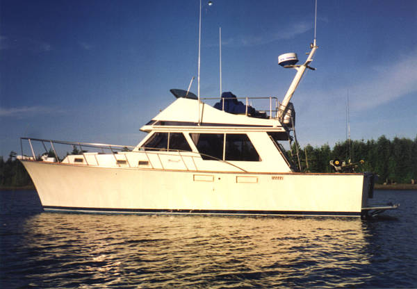

B-Atlas Boat Guide · TOLL-37-SE
Tollycraft 37 Sedan Flybridge Sedan
1974–1980
The Tollycraft 37 Sedan is a Pacific Northwest-built fiberglass flybridge sedan emphasizing practical cockpit use, broad visibility and solid cruising construction. Unlike traditional displacement trawlers, these boats use modified-V powerboat hulls and were offered with gasoline and, on some configurations, diesel power.

- LOA
- 37′ 4″ / 11.38 m
- LWL
- 34′ 6″ / 10.52 m
- Beam
- 13′ 2″ / 4.01 m
- Draft
- 3′ / 0.91 m
- Hull behaviour
- Planing
- Fuel
- Mixed Diesel/Gasoline
- Propulsion
- Shaft
- Engine configuration
- Twin Inboard
- Boat family
- Flybridge Cruiser
- Construction
- Fiberglass
Best for
- Pacific Northwest and Great Lakes coastal cruising
- Buyers wanting classic sedan practicality with moderate-speed capability
- Owners who value cockpit utility and dual helm stations
Trade-offs
- Fuel burn and performance depend strongly on engine package
- Older gasoline installations may not suit buyers prioritizing diesel economy
- Age-related deck, window, tank and wiring condition still requires careful survey
Known concerns
- No model-specific concern has been promoted to B-Atlas’s evidence threshold. This does not mean the model has no age-, condition- or hull-specific risks.
Inspection focus
- Verify exact Tollycraft model/year and engine package
- Inspect deck, flybridge, window and cockpit penetrations for moisture
- Inspect fuel tanks, exhaust systems, wiring and engine-room ventilation
- Inspect shafts, struts, rudders and steering
- Confirm bridge configuration and air draft
Continue researching
Related boat models
Tollycraft 34 Sport Sedan Sport Sedan
34 ft · Planing
Carver 3807 / 390 Aft Cabin Aft Cabin Motor Yacht
37.5 ft · Planing
Beneteau Swift Trawler 35 Flybridge
37.04 ft · Semi-Displacement
Back Cove 32 Downeast Cruiser
37 ft · Planing
Duffy 37 Downeast / Lobsterboat Hull
37 ft · Semi-Displacement
Californian 38 LRC Sedan Long Range Cruiser Sedan
37.67 ft · Planing
About this record
B-Atlas preserves uncertainty: missing information remains unknown rather than being treated as a negative. Specifications and guidance describe the model record; individual boats can differ by year, equipment, refit and condition.